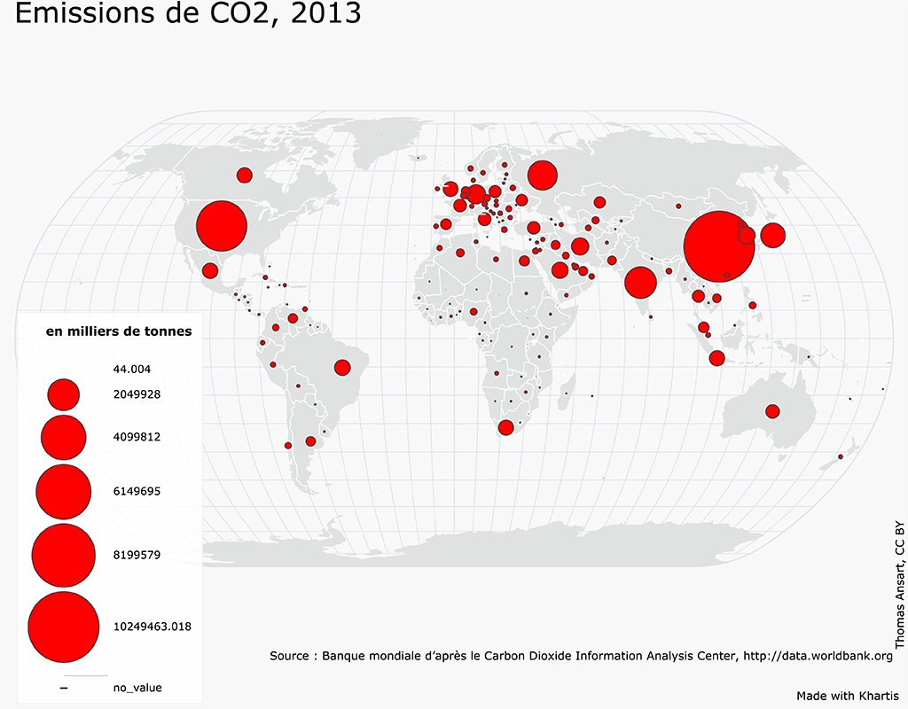
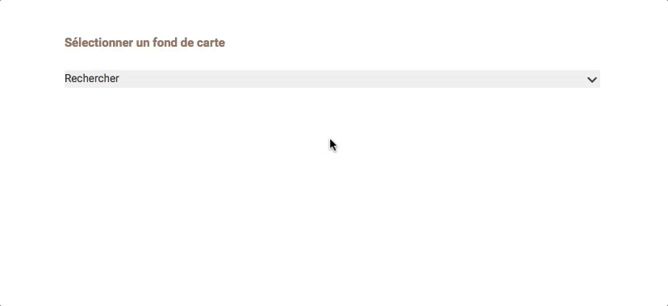
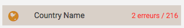
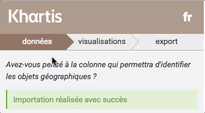
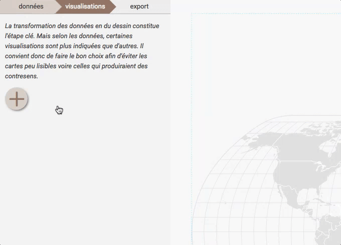
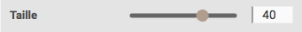
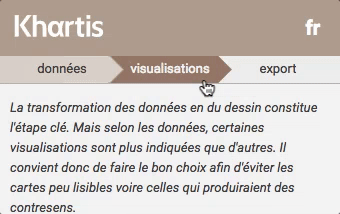
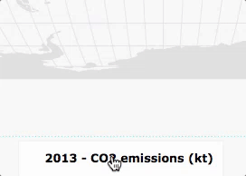
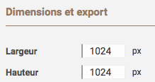
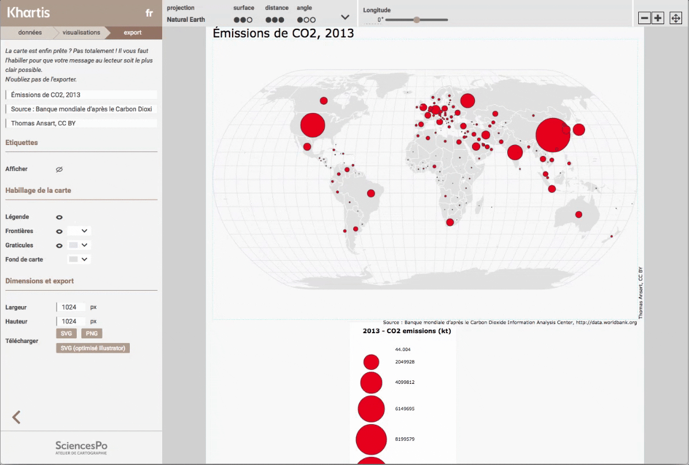

Premiers pas avec Khartis (1)
Nous allons réaliser cette carte du monde des émissions de CO2 en 2013. 
Récupérer les données
Nous avons téléchargé les données au format csv depuis le site de la Banque mondiale et vous pouvez les récupérer directement ici (clic droit 'enregistrer le lien sous').
Que contiennent les données ?
-
Deux indicateurs :
-
les émissions de CO2 (en milliers de tonnes)
-
les émissions de CO2 (en tonnes par habitant)
-
à différentes dates : 1960, 1970, 1980, 1990, 2000, 2005, et de 2010 à 2013
Choisir le fond de carte
Les données sont à l’échelle des pays du monde alors nous choisissons ‘Monde > pays (2016)’ 
Une fois sélectionné, une vignette du fond de carte s’affiche accompagné d’un aperçu du dictionnaire
Importer les données
Dans Khartis il existe trois manières de charger des données :
-
cliquer sur ‘Importer’ et sélectionner le fichier csv là où il est rangé
-
glisser le fichier csv depuis son dossier directement dans le cadre
-
copier-coller les données directement depuis un logiciel de tableur ouvert
Pour cette fois nous utiliserons la deuxième option. Cliquer ensuite sur ‘suivant’

Géoréférencer les données
Il faut maintenant s’assurer que nos données ont bien été reconnues, particulièrement la colonne du tableau qui fait le lien avec le fond de carte. Nous l’appelons ‘colonne de référence géographique’.
Khartis reconnaît et identifie automatiquement les colonnes susceptibles de faire ce lien. Dans le cas présent la colonne "Country Name". Et nous pouvons au besoin corriger les cellules de la colonne qui n’auraient pas été reconnues en cliquant sur le texte d’erreur en rouge :

Passons à l’étape suivante

Visualiser les données
Nous voulons représenter les émissions de CO2 par pays en 2013 à l’aide de symboles proportionnels aux valeurs (des points plus ou moins gros selon que les émissions sont plus ou moins fortes).
Cliquez sur le ‘+’ puis sélectionnez la variable à représenter "2013 - CO2 emissions (kt)" et enfin choisissez la visualisation “valeurs > symboles”.

Maintenant des cercles proportionnels aux émissions de CO2 sont placés dans tous les pays et un volet de réglage de la visualisation est ouvert.
Nous allons améliorer la lisibilité de la carte en renforçant la taille des cercles : par exemple passer de 10 à 40. On aperçoit alors les plus petits cercles et les zones denses en cercles restent lisibles.

Passons à la dernière étape

Export
Habillage
Cette nouvelle étape tout aussi fondamentale que la précédente permet d’ajouter tous les éléments textuels nécessaires à la bonne compréhension de la carte. Notamment un titre, une source, un entête de légende, et un crédit.
Voici une proposition qui répond à une série de questions que l’on peut se poser devant une carte :
-
Quel est le sujet de la carte ?
- Titre : Émissions de CO2, 2013
-
D’où proviennent les données ?
- Source : Banque mondiale d’après le Carbon Dioxide Information Analysis Center, http://data.worldbank.org
-
Quelle est l’unité des données ?
- l’entête de légende est modifiable en cliquant dessus

- l’entête de légende est modifiable en cliquant dessus
-
Qui à fait cette carte et peut-on la réutiliser ?
- le crédit renseigne sur l’auteur de la carte et sur ce qui est possible de faire avec celle-ci en appliquant par exemple une licence creative commons
Mise en page
Maintenant que nous sommes assurés que la carte contient les éléments essentiels à sa bonne lecture, nous pouvons améliorer rapidement la mise en page.
Trois moyens d’actions sont à notre disposition :
-
les dimensions du document sont matérialisées en blanc et se distinguent du fond gris. Ce sont la largeur et la hauteur en pixels modifiables depuis le panneau de réglage à gauche.
 -
les marges de la carte matérialisées par un tireté bleu
-
le placement de la légende qui peut être déplacée par cliquer-glisser
On peut par exemple réduire la hauteur du document à 800px car le fond de carte est davantage rectangulaire que carré. Puis ensuite équilibrer les marges. Et enfin déplacer la légende.

Format d’export
Khartis propose trois formats d’export :